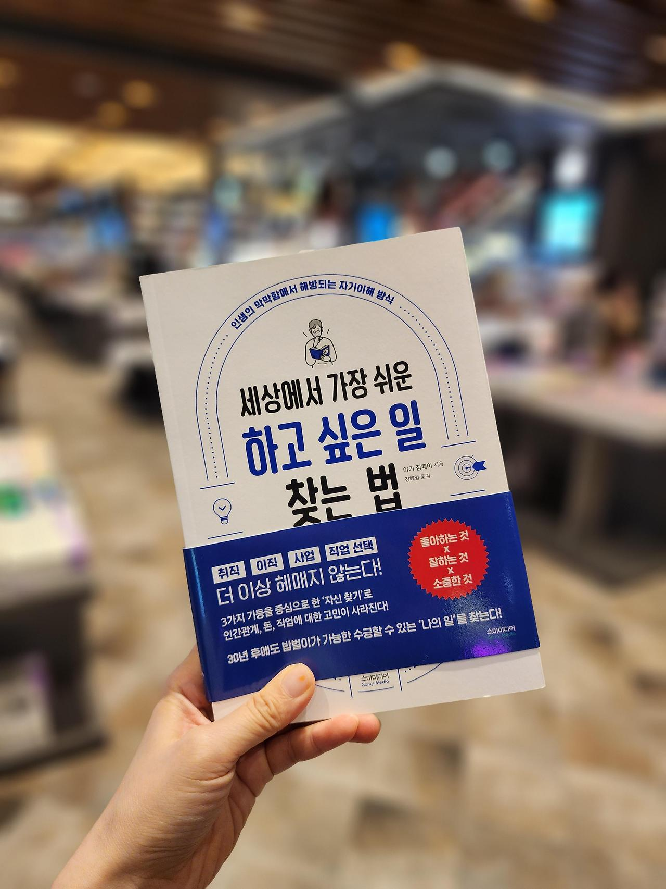

나의 가치관은?
무엇을 위해 사는가? 에 대한 답이 곧 가치관이라고 할 수 있다.
그렇다면 나는 뭘 위해 살고 있는가? 아마 대부분이 나처럼 대답하기 힘들겠지? 아래 5가지 단계를 통해 나의 가치관을 찾아보자.
Q. 존경하는 존재는 무엇인가요? 그 존재의 어떤 것을 존경하나요?
A. 나는 아버지를 가장 존경한다. 사람 키만한 타이어를 더우나 추우나 쉼없이 작업하며
가족을 위해 몸을 아끼지 않는 헌신이 정말 대단하다고 생각한다. 나는 그런 아버지가 될 수 있을까?
Q. 어릴 때, 사춘기 시절 있었던 일 중 지금의 나에게 가장 큰 영향을 미친 사건이나 경험은?
그 일들이 나의 가치관에 어떤 영향을 미쳤나요?
A. 철없던 나의 어린 시절, 힘든 가정형편을 이해하지 못하고 부모님에게 닌텐도를 사달라고 하거나,
가족참관수업에 오지 않는 부모님을 미워하는 등.. 어려서 당연할 수도 있는 많은 잘못을 했다
그래서 어릴 땐 부모님이 참 미웠는데 지금 생각해보면 정말 미안하고 존경스럽다
그런데 이런 경험들이 오히려 강한 정신력에 도움이 되지 않았나 싶다.